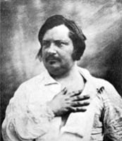

(1799 – 1850)

Bir çağı kapayıp bir çağı açan Fransız Devrimi'nin hemen ertesinde doğup o karmaşık günleri anlatan çok sayıda roman yazan, her gün en az elli fincan kahve içen ve bir türlü kapanmayan borçlarıyla boğuşmaktan yorgun düşmüş bir yazardı Honoré de Balzac; ama yine de kimse engel olamadı "Goriot Baba"yı, "Eugènie Grandet"yi, "Vadideki Zambak"ı yazmasına...
Honoré de Balzac'ın (okunuşu: Onore dö Balzak) asıl adı Honoré Balssa'dır. Babası Bernard François Balssa Kral Konseyi'nde sekreter olarak çalışmıştı. İlkokuldan sonra Balzac, Vendome'da "College des Oratoriens"te öğrenim gördü. 1816'da ailesi Paris'e taşındı ve hukuk öğrenimi görmek için Sorbonne Üniversitesi'ne gitti. Üç yıl bir noterin yanında çalıştı, ama küçük yaşlardan beri edebiyata gösterdiği eğilim ağır bastı. Trajedi türünü denediği, 1819'da yazılmış Cromwell başarı kazanamayınca romana yöneldi. Değişik adlarla tarihsel, mizahi ve gotik romanlar yazdı. Basımcılık, yayıncılık hatta dökümcülük yaptı. Başarılı olamayınca tekrar edebiyata döndü. Balzac da (Charles Dickens gibi) ilk romanlarını tefrika halinde yazdı ve Paris Revue ve La Presse gibi dergilerde yayımlattı. 1829'da yazdığı Les Chouans isimli tarihi roman, tanınmasını sağladı. Bu eser Türkçeye Köylü İsyanı [1974] ve Chouan'lar [1977] adlarıyla iki kez çevrildi. 1824-1834 arasında yayıncılarından aldığı parayla bohem bir yaşam sürdü. 1829-1831 arasında gazetelere yergi yazıları yazdı. 1832 yılında yazdığı ve kendi hayatından izler taşıyan Louise Lambert adlı romanının ardından ilk başyapıtı olan Eugènie Grandet (1833) geldi. 1835'te ise yeni bir başyapıt doğdu: Goriot Baba. 1830'lardan sonra amacı, bir toplumun tarihini yazmaktı: eski ve yeni romanlarını üç bölüm altında toplamaya karar verdi. Örf ve âdet incelemeleri, felsefi incelemeler ve çözümleyici incelemeler. Bu tasarı 1834-1837 arasında 12 cilt olarak gerçekleşti. 1840'ta bu yapıtların hepsine Dante'den esinlenen bir başlık koydu: "İnsanlık Komedisi". 1842-1848 arasında ise 17 ciltlik bir baskısı yapıldı. 1869-1876 arasında da 24 cilt olarak yayımlandı.
Yazar, "Eugène Rastignac" veya "Henri de Marsay" gibi bazı kahramanlara eserlerinde tekrar tekrar yer verdi. 1836 ve 1837'de İtalya gezisine çıktı. 1828'de Versailles yakınlarında pahalı bir ev yaptırdı, ama sonraları borç sorunu nedeniyle Passy'de, bugün "Balzac Müzesi" olan evine yerleşti. Tiyatroda başarısız denemeleri oldu. Edebiyatçılar Derneği başkanı olarak yazar haklarıyla ilgili girişimlerde bulundu.
Balzac, sonraki yıllarda çoğunlukla Sèvres'deki villasında yaşadı ve romanlarını orada yazdı. 1847'de kısa bir süre boyunca uzatmalı sevgililerinden Eveline Hanska'nın Polonya'daki şatosunda kaldı. 1850'de Eveline ile Ukrayna'nın Berdiçiv kentinde evlenip Paris'e döndüler. Balzac birkaç ay sonra öldü. Geride seksen beşi tamamlanmış, ellisi taslak halinde birçok eser bıraktı.
Romanda gerçekçilik ve doğalcılık akımlarının yaratıcısı olarak kabul edildi. Mantıksal bir sıra izleyen olayların her şeyi gören bir gözlemcinin ağzından anlatıldığı, kahramanların tutarlı bir biçimde sunulduğu, kuralları belli "klasik roman tekniğini"nin en önemli öncülerinden sayıldı. Olağanüstü bir gözlem yeteneği ve güçlü bir hafızası vardı. Kendisini başka insanların yerine koyup onların duygularını paylaşmayı biliyordu. Eserlerinde nedenselliği ve arka plan ile karakterler arasındaki ilişkiyi açıklamakta ustaydı.
Napoléon İmparatorluğu ve Fransız Devrimi'ni eleştiren yapıtlar ortaya koyan Balzac; insanı, onun toplumdaki yerini ve çevrenin, siyasetin, aşkın ve zenginliğin insan üzerindeki etkilerini romanlarında uzun uzun anlatmıştır. Sanat, edebiyat, siyaset ve metafizik de Balzac romanlarının değişmez konuları arasındadır. Alexandre Dumas'nın arkadaşı olan Honoré de Balzac, Goethe ve Dante'den etkilenmiş ve Emile Zola, Marcel Proust ve Guy de Maupassant'ı ise derinden etkilemiştir.
Seçme Yapıtları: Köylü İsyanı (1829), Eugènie Grandet (1833 – Antik Yayınları, 2010), Goriot Baba (1835 – Bordo Siyah Yayınları, 2002), Bette Abla (1846 – Kastaş Yayınları, 2002), Altın Gözlü Kız (1833 – Kastaş Yayınları, 2004), Kibar Fahişelerin İhtişam Ve Sefaleti (1847 – Can Yayınları, 2012), Vadideki Zambak (1835 – Arkadaş Yayınları, 2012)